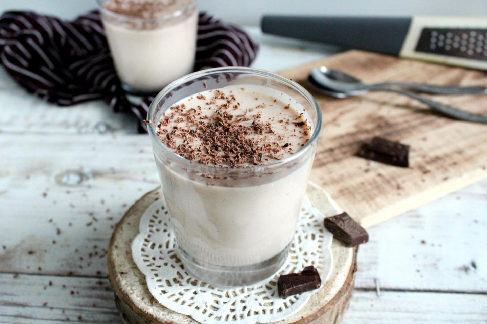
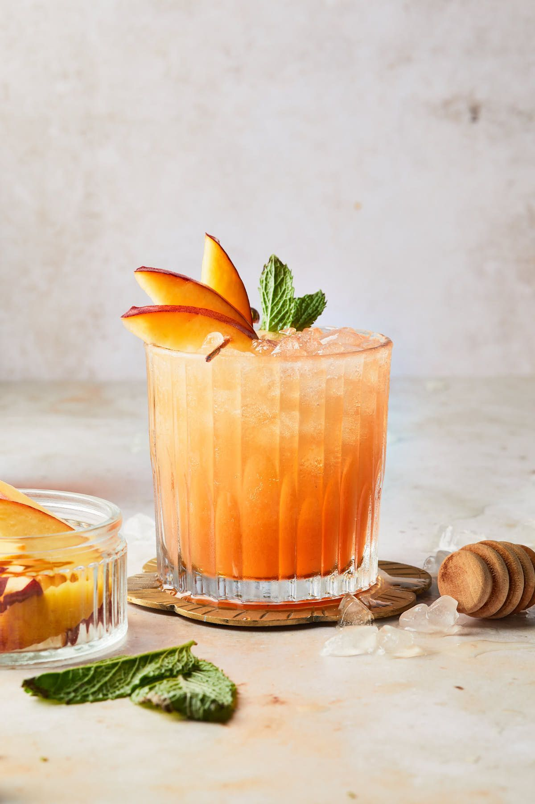
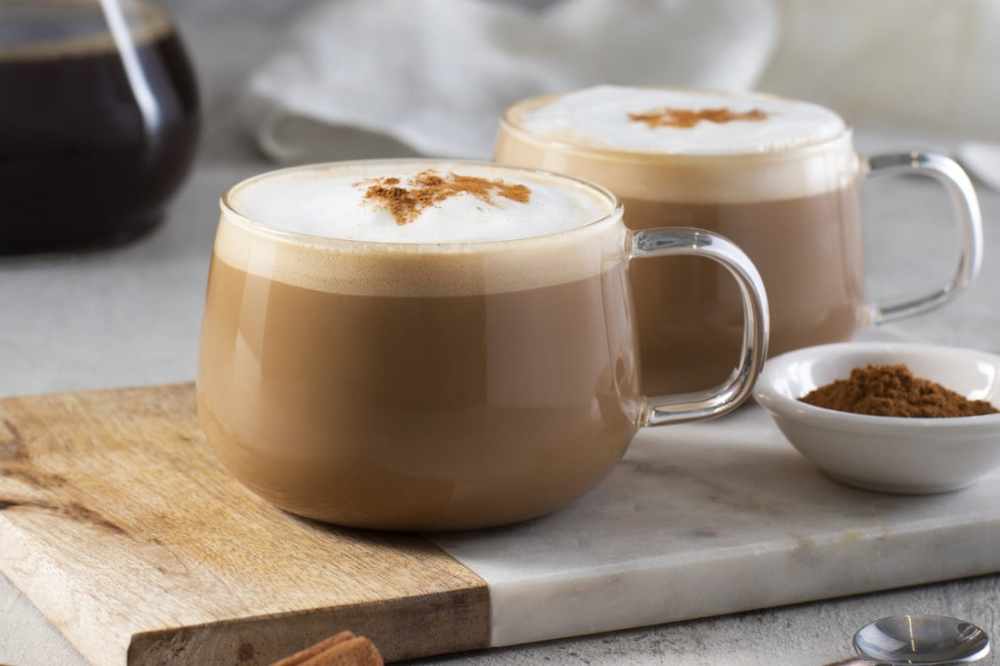
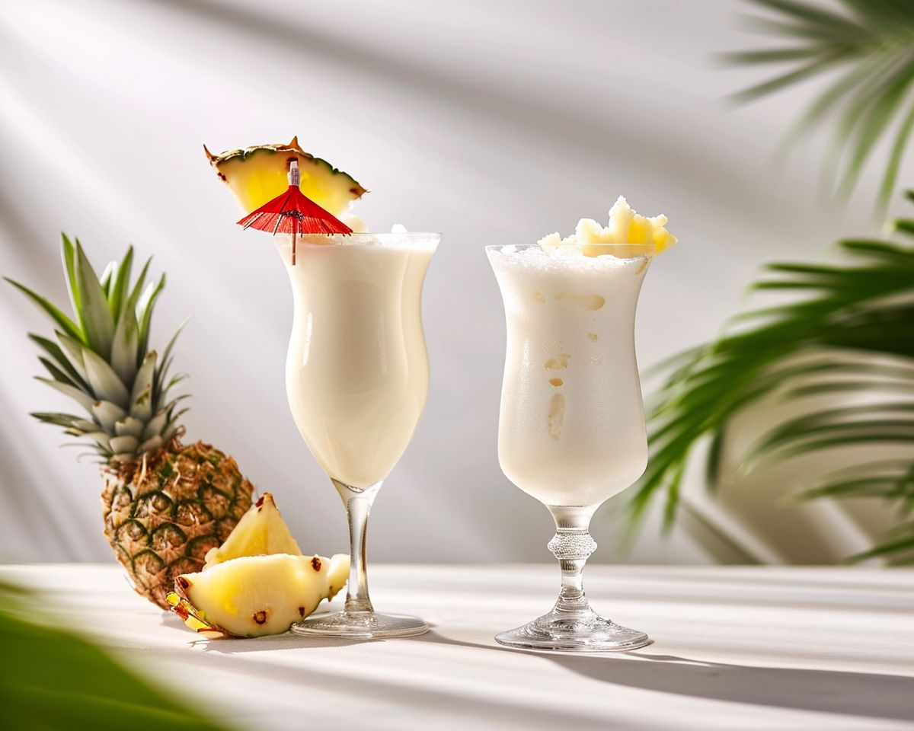
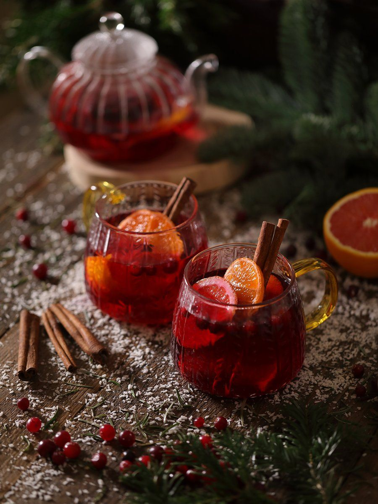

Какао на молоке
31 января 2026
Знакомый с детства вкус домашнего какао не сравнить с современными растворимыми, которые можно купить в кофейнях. Какао получается с насыщенным шоколадным вкусом.
Коллекция изображений по теме: Категории напитков

31 января 2026
Знакомый с детства вкус домашнего какао не сравнить с современными растворимыми, которые можно купить в кофейнях. Какао получается с насыщенным шоколадным вкусом.

31 января 2026
Это газированный абрикосовый коктейль, который идеально подходит в качестве лёгкого аперитива, освежающего напитка в жаркий день или для пикника.

31 января 2026
Невероятно сливочный кофейный напиток, в котором эспрессо соединяется с большим количеством взбитого молока и ароматом ванили.

31 января 2026
Этот котейль сохранил яркий тропический вкус кокоса и ананаса. Он готовится на основе соков этих фруктов, а также банана и газированной воды.

31 января 2026
Прекрасный согревающий напиток, в котором аромат корицы и мягкость молока создают идеальный дуэт. Он станет отличным завершением ужина, если подавать его горячим.

31 января 2026
Горячий фруктовый чай согреет не хуже простого. Благодаря ягодам, травам и апельсину в составе он получается еще более ароматным и пряным.